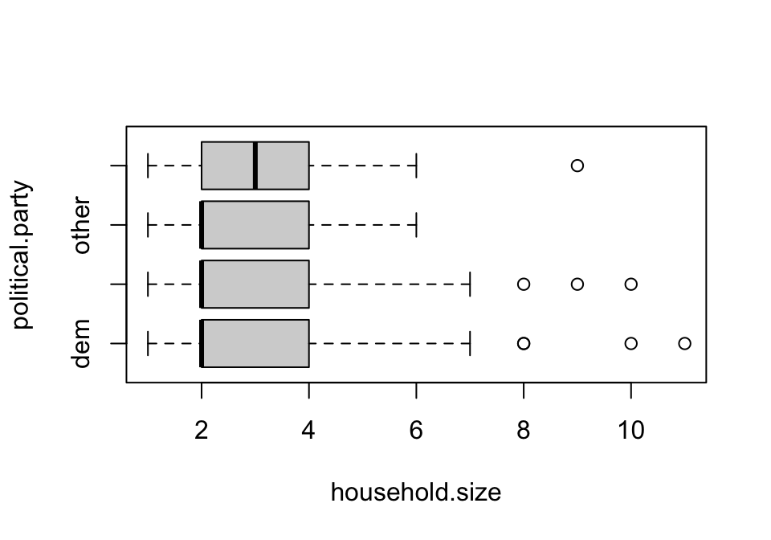
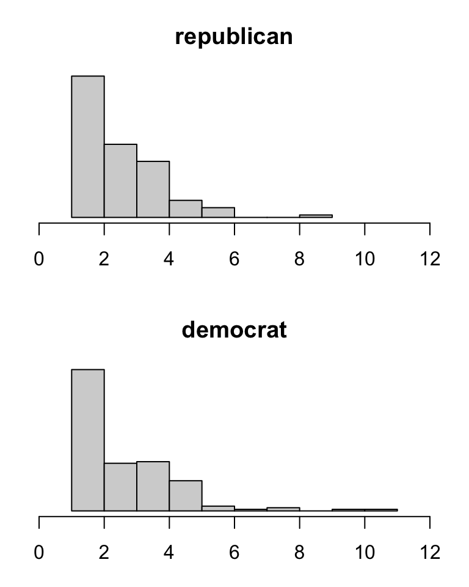
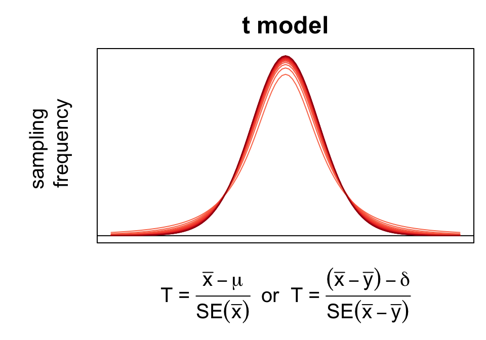
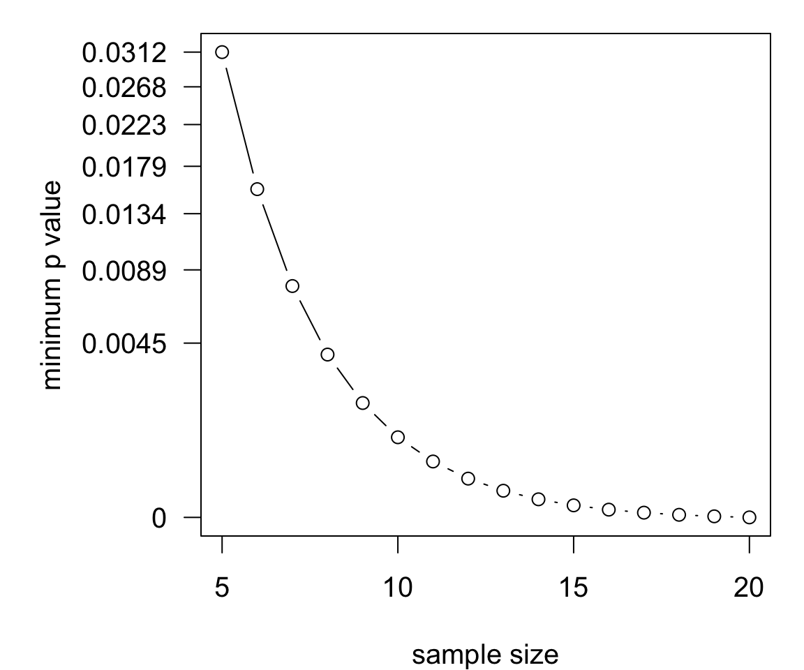
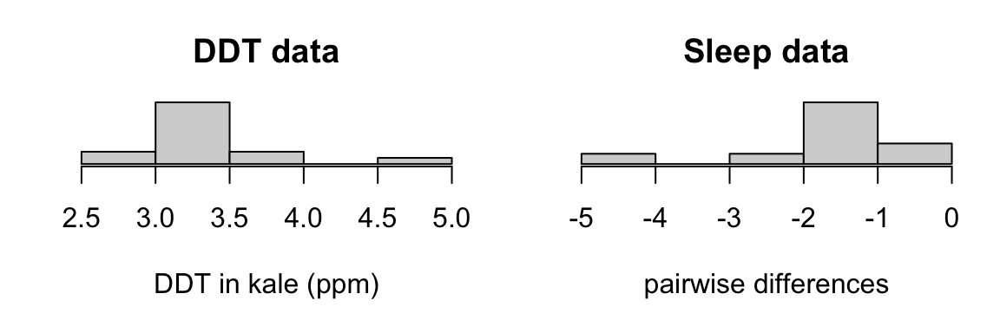
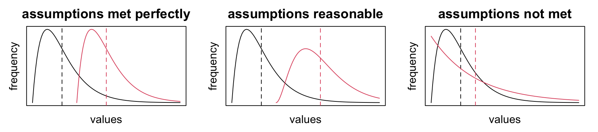
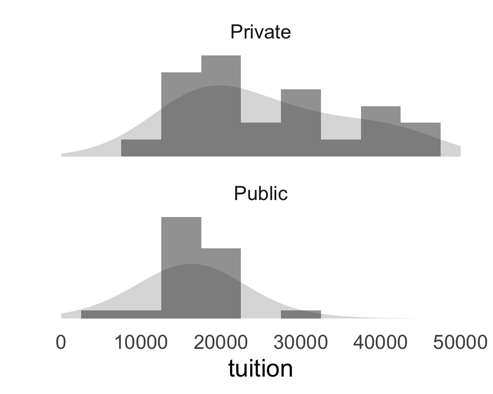
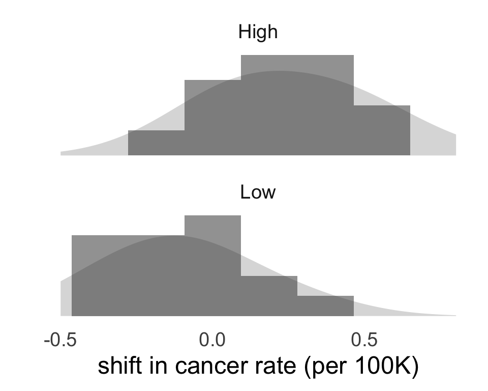

Nonparametric inference
Alternatives to one- and two-sample t tests
Today’s agenda
- [lecture] One- and two-sample inference using ranks
- [lecture] Permutation tests
- [lab] Three applications of nonparametric tests
Remark
Avoid over-interpreting one summary/graphic by checking alternatives
- common error: “republicans had larger households”

Parametric inference
Recall the basis for our inferential procedures (intervals/tests) so far:
the \(t\) model approximates the sampling distribution of the \(T\) statistic(s)

This is an example of a parametric approach: it relies on a distributional assumption.
- the t model is parametric distribution
- \(T\) exactly follows this model only when underlying population distribution(s) are normal
What should be done if the assumption is not plausible?
Nonparametric procedures
Nonparametric procedures are distribution-free in the sense that they make no assumptions about the specific form of the underlying population distribution.
This does not mean nonparametric methods are free of any assumptions whatsoever
Nonparametrics can provide useful alternatives in special circumstances:
- parametric assumptions not plausible
- inferences about population parameters besides means
- small-sample settings
- ‘narrow’ inferences limited in scope to observed data rather than a population
We will cover two nonparametric approaches to one- and two-sample inference:
- Rank-based procedures
- Permutation procedures
Rank-based procedures
Rank-based procedures are inferential procedures that leverage sorted data and distributional symmetry or group exchangeability assumptions to test for location shifts.
Consider the DDT data (15 measurements of DDT in kale in ppm) again. Sorted:
2.79, 2.93, 3.06, 3.07, 3.08, 3.18, 3.22, 3.22, 3.33, 3.34, 3.34, 3.38, 3.56, 3.78 and 4.64
Suppose you wish to test whether the ‘center’ is 3ppm. If you assume the population distribution is symmetric about c…
- How many observations would you expect to be smaller than c?
- How many observations are actually smaller than 3?
- Based on your answers to 1-2, do you think it is likely that c = 3?
Signed rank test
The signed rank test is an alternative to the one-sample t test that assumes the population distribution is symmetric to test hypotheses about its center c.
Hypotheses: \[H_0: c = c_0 \quad\text{vs.}\quad H_A: c \mathrel{\substack{<\\\neq\\ >}} c_0\] Procedure:
[center] Calculate deviations \(d_i = x_i - c_0\)
[rank] Sort and rank the absolute deviations \(|d_i|\)
- average ranks in case of ties
- drop zeros
[sum] Add up the ‘signed ranks’ \(\text{sign}(d_i) \times R_i\)
This produces the test statistic:
\[V = \sum_{i = 1}^n \text{sign}(d_i) \times R_i\]
Sampling distribution found using:
- (exact) combinatorics
- (approximate) probability theory
Reject if \(V\) is sufficiently large in the direction of the alternative.
Illustration: DDT data
Signed rank calculations:
# A tibble: 15 × 4
obs.num ddt ddt.c signed.rank
<int> <dbl> <dbl> <dbl>
1 10 3.06 0.0600 1
2 2 2.93 -0.0700 -2.5
3 11 3.07 0.0700 2.5
4 13 3.08 0.0800 4
5 7 3.18 0.180 5
6 1 2.79 -0.21 -6
7 3 3.22 0.220 7.5
8 5 3.22 0.220 7.5
9 8 3.33 0.33 9
10 9 3.34 0.34 10.5
11 15 3.34 0.34 10.5
12 6 3.38 0.38 12
13 12 3.56 0.56 13
14 4 3.78 0.78 14
15 14 4.64 1.64 15 Procedure:
- Center observations
- Rank absolute deviations
- Sum signed ranks
Hypotheses:
\[H_0: c = 3 \quad\text{vs}\quad H_A: c > 3\]
Test statistic:
| sign | sum |
|---|---|
| negative | -8.5 |
| positive | 111.5 |
| 103 |
There are 32768 possible sign combinations; of these, only about 0.18% give a larger value of \(V\).
\(p = 0.0018 < 0.05 \;\Rightarrow\; \text{reject } H_0\)
Signed rank test in R
The implementation in R looks and functions much like t.test:
Wilcoxon signed rank test with continuity correction
data: ddt
V = 111.5, p-value = 0.001876
alternative hypothesis: true location is greater than 3
95 percent confidence interval:
3.135002 Inf
sample estimates:
(pseudo)median
3.26001 - reports the sum of positive signed ranks
- \(p\) value is approximate with ties or zeros
- pseudo-median (\(\neq\) median) is a measure of center
The technically accurate interpretation is given in terms of “center”:
The data provide strong evidence against the null hypothesis that the center of the distribution of DDT in kale is 3ppm in favor of the alternative hypothesis that the center exceeds 3ppm (signed rank test, p = 0.001876).
Minimum \(p\) values
The \(p\) value for the test is the proportion of all possible sign combinations that yield a \(V\) larger/smaller than observed.

- fewer sign combinations for few observations
- smallest possible \(p\) value depends on sample size
- don’t expect small p-values in small-\(n\) settings
Paired differences
For paired differences, the signed rank test tests for a difference in location between the groups.
The test assumes that both population distributions are symmetric and tests the hypotheses:
\[H_0: c_1 = c_2 \quad\text{vs}\quad H_A: c_1 \mathrel{\substack{<\\\neq\\ >}} c_2\]
- \(c_1\) is the center of group/population 1
- \(c_2\) is the center of group/population 2
Paired difference example
Is drug 2 more effective than drug 1?
First few observations of sleep data:
| ID | drug1 | drug2 | diff |
|---|---|---|---|
| 1 | 0.7 | 1.9 | -1.2 |
| 2 | -1.6 | 0.8 | -2.4 |
| 3 | -0.2 | 1.1 | -1.3 |
| 4 | -1.2 | 0.1 | -1.3 |
The signed rank test will test for a difference in location, assuming that the pairwise differences are symmetric about some central point.
Hypotheses:
\[\begin{cases} H_0: c_\text{drug1} = c_\text{drug2} \\ H_A: c_\text{drug1} < c_\text{drug2} \end{cases}\]
Wilcoxon signed rank test with continuity correction
data: sleep.diffs
V = 0, p-value = 0.004545
alternative hypothesis: true location is less than 0
95 percent confidence interval:
-Inf -1.149967
sample estimates:
(pseudo)median
-1.400031 Aside: what does \(V = 0\) mean?
Checking assumptions
For the signed rank test, the underlying distribution is assumed to be symmetric.
Check the symmetry assumption graphically using histograms.
It can be tricky with small sample sizes; don’t be too sensitive to asymmetries. Both of these are acceptable.
Rank sum test
The rank-sum test is a two-sample rank-based inference procedure that tests for a difference in location from independent samples.
Key idea: if observations in both groups come from the same population distribution, then they should be exchangeable (i.e., groupings don’t matter).
Assumptions:
- observations are independent
- the populations differ only by location
Hypotheses:
\[H_0: c_1 = c_2\quad\text{vs}\quad H_A: c_1 \mathrel{\substack{<\\\neq\\>}} c_2\]
Procedure:
- [pool] Combine observations from both groups
- [rank] Sort and rank pooled observations
- [sum] Add up ranks in the smaller group
Reject if the sum is larger/smaller than expected.
Checking assumptions
The assumption for the rank sum test is that the distributions differ only by location.
If this is true, histograms should have the same shape and modes.
In all of these cases, there is a (true) difference in location.
- if shape differs too much, the rank sum test should not be used
- can be hard to tell with small samples
Your turn
Is the rank sum test appropriate for comparing centers?
Out-of-state tuition costs from 26 public and 26 private universities.

Deviations from expected cancer rates in CT in years with high and low sunspot activity.

Rank sum test in R
The wilcox.test function also implements the rank sum test.
Wilcoxon rank sum exact test
data: delta by sunspot.activity
W = 270, p-value = 8.182e-06
alternative hypothesis: true location shift is greater than 0
95 percent confidence interval:
0.2693557 Inf
sample estimates:
difference in location
0.455014 \(p\)-value gives the percentage of possible rank allocations among the groups for which the rank sum is at least as favorable to \(H_A\)
- computed by combinatorics
- subject to minima depending on sample sizes
The data provide strong evidence against the hypothesis that the distribution of deviations from expected cancer rates in Connecticut does not differ according to sunspot activity in favor of a positive location shift associated with high sunspot activity (rank sum test, \(p < 0.0001\)).
Use heuristics for rank procedures
Consider a rank-based procedure if…
- sample sizes are small
- you want to test for a location shift
Once you’ve decided to consider a rank test…
- Determine test type (one-sample, paired, two-sample)
- Check symmetry/similarity assumption graphically
- Perform test
Permutation tests
Permutation tests are two-sample procedures that provide highly flexible alternatives to parametric tests based on exchangeability.
Key idea: if there is no difference between groups/populations, observations are exchangeable between groups.
Procedure:
- Randomly shuffle group assignments among the observations.
- Calculate any group comparison.
- Repeat many times.
- Calculate proportion of shufflings for which the comparison is at least as large as the observed comparison in the direction of the alternative
Permutation tests for differences in means are implemented by permTS().
Permutation Test using Asymptotic Approximation
data: OutOfState by Type
Z = 3.0644, p-value = 0.001091
alternative hypothesis: true mean Type=Private - mean Type=Public is greater than 0
sample estimates:
mean Type=Private - mean Type=Public
12219.08 Lab: three end-to-end analyses
Cholesterol data:
| Diet | Cholesterol |
|---|---|
| CORNFLK | 4.61 |
| OATBRAN | 3.84 |
Zinc and dietary supplements:
| Group | Zinc |
|---|---|
| A | 1.31 |
| A | 1.45 |
Sleep data:
| ID | 1 | 2 | diff |
|---|---|---|---|
| 1 | 0.7 | 1.9 | -1.2 |
| 2 | -1.6 | 0.8 | -2.4 |
Questions:
Are zinc concentrations (mg/ml) in the blood of rats lower among those that received a dietary supplement (group A) compared with those that did not receive the supplement group (B)?
Is there a difference in cholesterol associated with consuming oat bran compared with consuming corn flakes?
Does drug 2 produce more than 1 hour of additional sleep compared with drug 1?
Your task, for each dataset, is to (a) determine and perform the appropriate nonparametric test and (b) interpret the result accurately.

STAT218